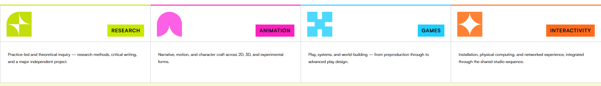
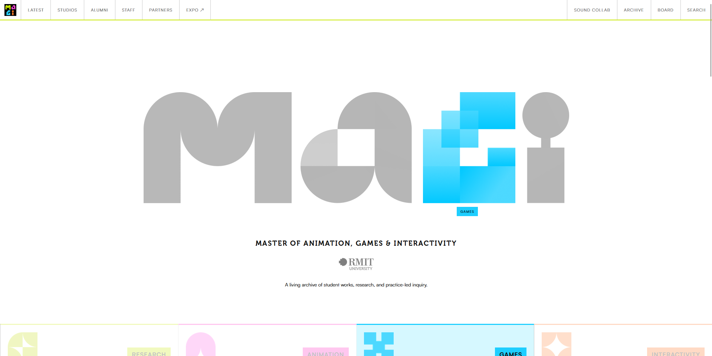
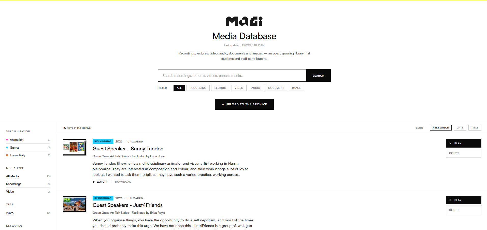
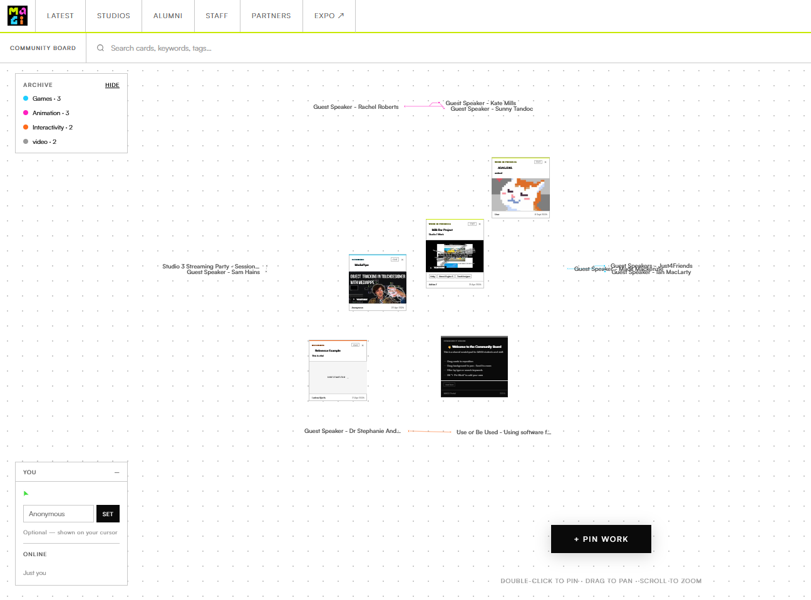
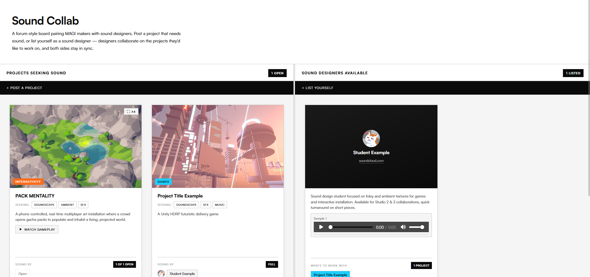
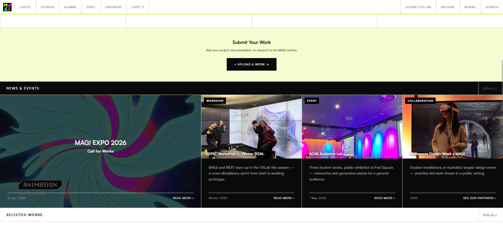
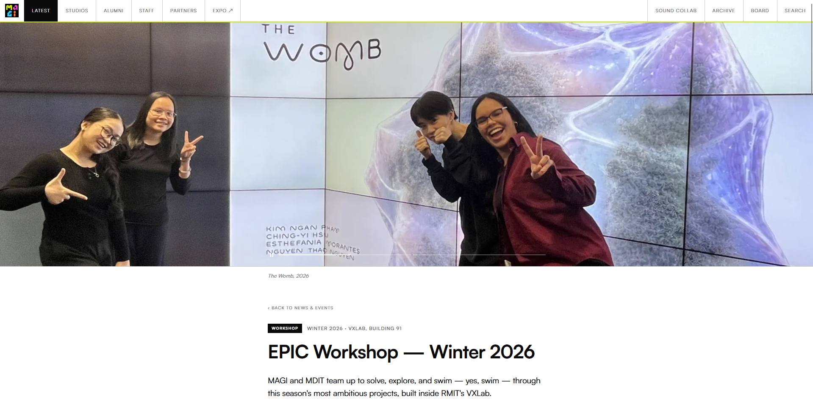
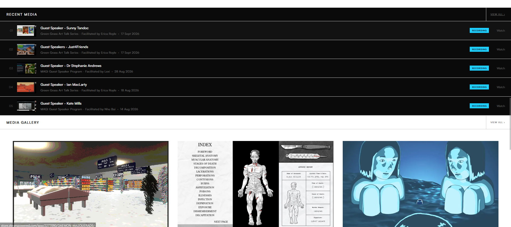
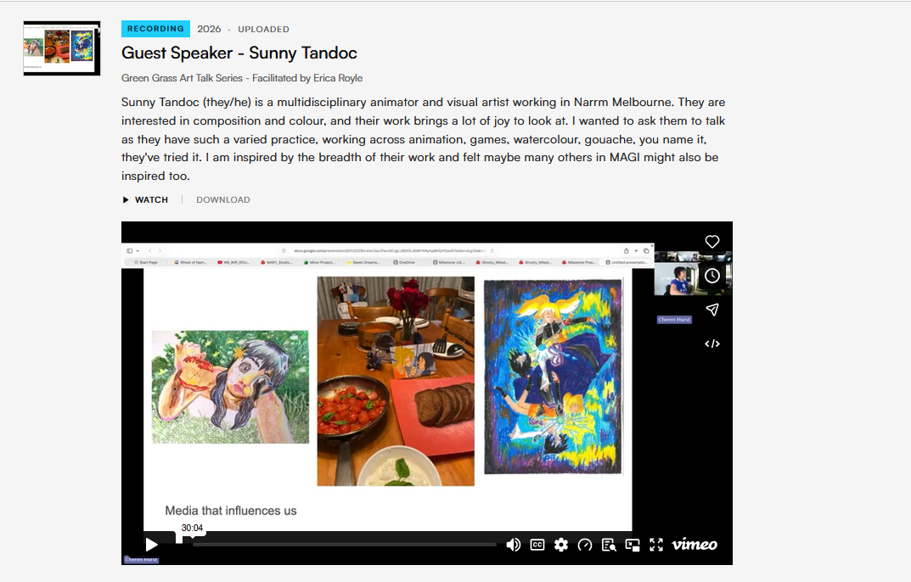

Website Development & Design
Official MAGI
Website

The MAGI website was developed using VSCode to capture the essence of what MAGI represents, community and the cross pollination of animation, games and interactivity. The logo itself becomes a playful signature interaction of the website's core identitiy. It aims to host students works, workshops and the community's larger scope of guest talks, lectures and panels.
Can a website foster community? and if so, how does it fit into the bigger picture and legacy of what MAGI represents and thrives off of? If we think of websites as architecture than websites must be cared for, designed with people in mind and serve the community. With that in mind, MAGI's website must house and maintain play, community interaction and creative preservation all in one place.
My process always involves starting from a blank template and building up from there. A lot of fellow students run into the mistake of integrating AI workflows way too early in the process of website-making where it would be making crucial design decisions for them. It is important that you always maintain control over that.
Design guidelines, especially exemplary ones have design elements that are already strong which do not need to be reproduced. Case examples include Nhu’s MAGI branding, or Sunny’s symposium art direction in which I had taken the colour and shapes and built on those elements by making them (what websites do best) interactive.
Borrow the strongest elements and enhance their strengths.

The four streams, built from the branding’s own shapes and colour
In the case of MAGI, the website was easy, because the branding had already been established. What was needed was a container and some icing. The landing page requires the most care and attention. It’s the first thing the users see. Great, the logo is already catchy let’s use that. The next design decision would be thinking of playful interactivity. I always think, if websites are like architecture, what would it feel like? MAGI to me felt like a playground. So with that metaphor in mind, I would develop a series of hover interactions that the user would engage with through the letters.

The landing page, with the wordmark mid-interaction
I wanted the G to be draggable that would snap back to its position like a magnet.
Then I looked at the “i”, and thought to myself the dot on top of the line (or the tittle) looked like that could be a basketball of some sorts. So that would form the next interaction to be developed.
M came next in line, and I co-developed this idea with Stephanie Andrews as we discussed the various ways the user could play with the letters. M would fold out like origami, then reverse back.
The last one through several iterations was the A, in which it would eventually break apart into little pieces and be stackable and arrangeable, like Jenga.
Through adopting playful design thinking using the “websites as architecture” mindset and metaphor method adopted from Dr. Patrick McMahon, combined with established art direction, both the MAGI and symposium websites were built on strong foundations to begin with.
If you think about it from a worldbuilding lens, branding guidelines become well constructed lore, context and stories, (The novel).
Websites become adaptations, not reproductions of existing stories. (The TV series).
Nhu and Sunny wrote the novels and I simply adapted them into TV. When I say that, I mean that lightly, because TV inherently means the user is a viewer, but a website is more nuanced than that but I think you get the point. The person is the participant of this world they’re stepping into so you have to think about what they see first and how they navigate through this world (pathfinding and UX patterns). A purpose for the project also serves as one of the key anchors to the website, if the MAGI website is a playful community first and a “course front” second, then I have to think about what kind of architecture would serve this website best.
A living archive full of student workshops, guest speakers and lectures. A community post-it board. A platform bridging sound designers and animators alike are all carefully constructed buildings that house different needs, but first and foremost serves the community.



The living archive, the community board, and Sound Collab
This case study skips the technicalities of website making, instead focuses on the nuances of design decision making and thought processes or rationale on how I make those decisions.

Submitting work, and the news & events row

An article page for EPIC Workshop, Winter 2026

Recent media, above the gallery

A single record in the archive